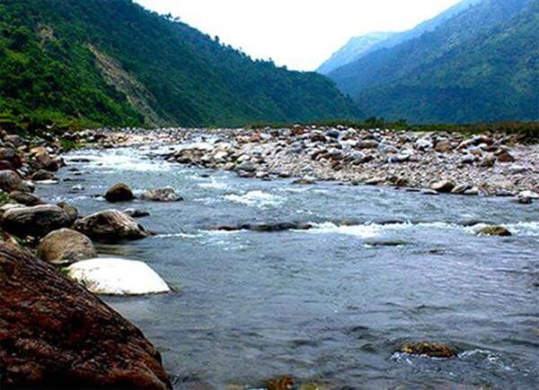

Tourist Places in Siliguri
Salugara Monastery: A Sacred Place
Salugara Monastery is one of the most popular sacred places of the Buddhist Religion and is nearby 6 km from the city. Someone who is in search of a place to relax or meditate will find this Monastery a perfect place to stay even alone for some time here (as a Monastery should be). You will also find a massive stupa built by Kalu Rinpoche, who was a llama and a teacher. People also call it home to five historical places admired by the followers and must-visit places in Siliguri.
Bengal Safari Park, Siliguri
For those who want to enjoy Safari, Bengal Safari Park is the perfect place for them to visit and spend some time with nature and the wild. In this park, you will get a view of the richness and diversity of the flowers and fauna found in North Bengal. Bengal safari also is the first park in Bengal where animal safari expeditions were firstly released and made a contribution to the increase of tourism in Siliguri. This park is spread over almost 700 acres and also is part of the lush forested area of Mahananda Wildlife Sanctuary. There are many medicinal plants and herbs in the park, but the main attraction of the park is elephant rides, and interesting wild safaris bring many visitors. You can see Mixed Herbivore Safari, Royal Bengal Tiger Safari, Asiatic Black Bear Safari, Leopard Safari, Aviary Foot Trail, Lesser Cat Enclosure Trail, etc. And also, get a specific child play area along with a food court and souvenir shop here.
Darjeeling Himalayan Railway: An amazing train Ride
It is one of the most ancient places in the world (also a UNESCO World Heritage Site), and most important that still working properly; the Darjeeling Himalayan Railway is one of the most magical places to visit in Siliguri. The trains offer you a trip from New Jalpaiguri to Darjeeling and back, to give you the experience of travelling in the heritage train, which feels more imaginary than real life. If you travel with your partner, nothing is better than this in Siliguri.
Dudhia
A beautiful location situated on the outskirts of Siliguri (nearly 28 km from the city) is honestly heart-melting. Among the "Places to visit in Siliguri," Dudhia is always a visit since it is the epitome of mountain peacefulness. A town on the Mirik-Siliguri route is the perfect location to go to riverside camp, go sightseeing, go fishing, take a village stroll, and go hiking. It is the perfect picnic location close to Siliguri because of the breathtaking views of the Balason terrain and the meandering Balaton river. The route from Siliguri to Dudhia provides spectacular landscapes with forest canopy starting up to verdant fields and a rocky slope. Time to visit: Only in daylight
Chilapata Forest, Siliguri
In Dooars, Alipurduar district, West Bengal, India, there is a thick forest called Chilapata Forest that is close to Jaldapara National Park. Hasimara town is only a short distance away and is located about 40 miles from Alipurduar. Between the Jaldapara National Park and the Buxa Tiger Reserve, the deep, wildlife-rich Chilapata Forest serves as an elephant passage. Rhinos are rarely seen in the jungles, although leopard sightings are relatively common. The abandoned Nal Kings' forts, tonga rides, and boating on the Bania River are among the area's additional pleasures. Chilapata has the distinct advantage of being centrally positioned because it is close to all of Eastern Bhutan's key tourist attractions. From here, visitors may travel to all the city's tourist attractions.
Sepoy Dhura Tea Garden
The Sepoy Dhura Tea Garden is situated in the Kurseong Tehsil, or sub-district, of the West Bengal, Darjeeling district. It is roughly 17 kilometres from Siliguri, and the trip there from Siliguri requires 40 minutes. Tourists can choose public transportation to get to the tea garden after they arrive in Siliguri. A lovely area to visit near Siliguri is the Sepoy Dhura Tea Garden. Tourists can visit the expansive tea gardens, observe the labour-intensive process of picking tea leaves, and learn how to make tea using tea leaves. The tea garden is quite beautiful. The tea leaves are picked and processed by locals. Away from the smog of the cities, it is a pleasant location to visit. The environment is serene and serene. Visitors to Sepoy Dhura Tea Garden also have the option of taking freshly made tea home with them. The tea garden is a popular destination for visitors to unwind with their loved ones. Overall, it's a pleasure to tour Sepoy Dhura Tea Garden. The location is open to exploration all year long.
About Siliguri
Siliguri, a small city in West Bengal, is something more than being a gateway to the verdant Dooars and the mountainous terrain of North Bengal. It can provide you peace of mind and true relief to your eyes. Completely covered with tea gardens, this city is one of the most popular tourist places in Bengal. You can see the North Bengal Science Centre, Surya Sen Park, and Iskcon Temple. Further north, the Salugara Monastery, Kalu Rinpoche, and more places to visit in Siliguri.